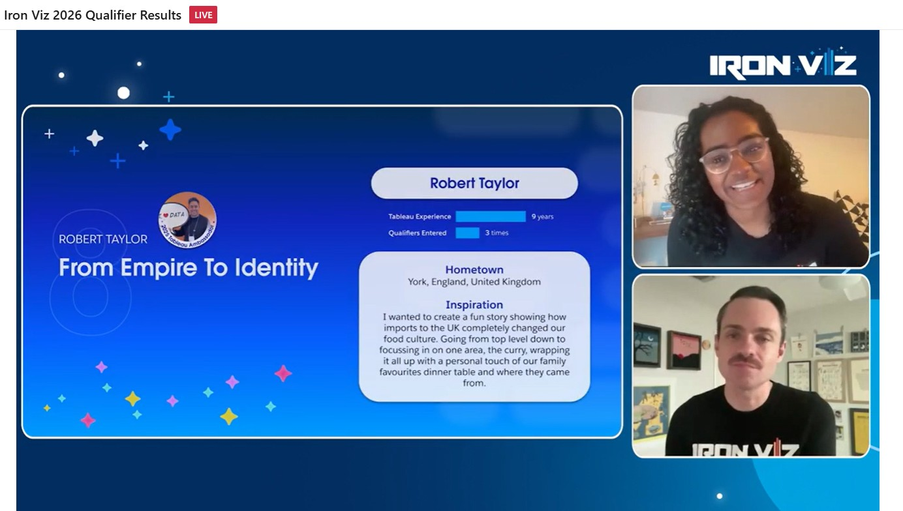
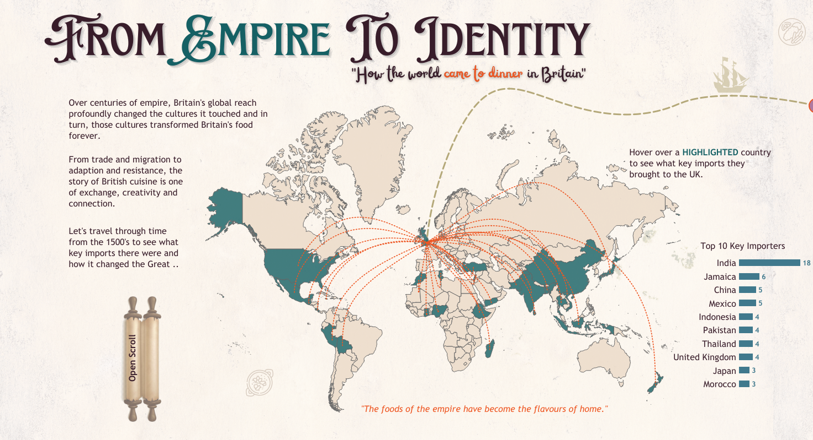
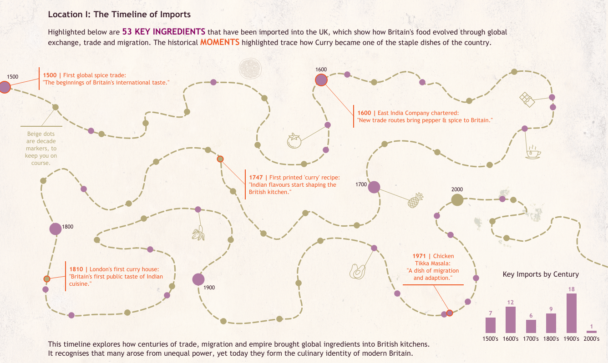
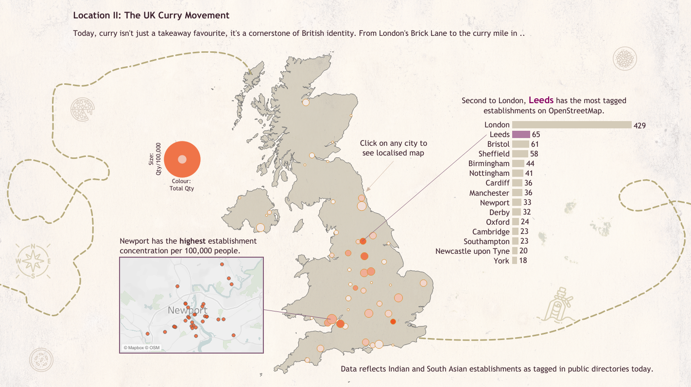
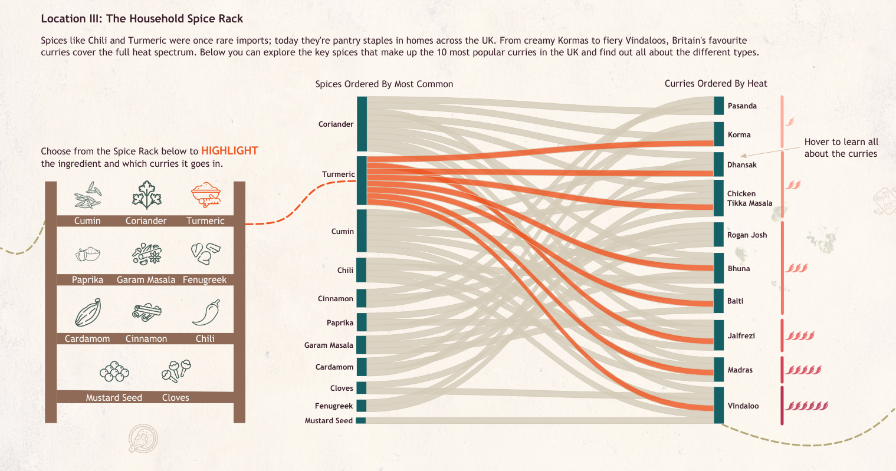
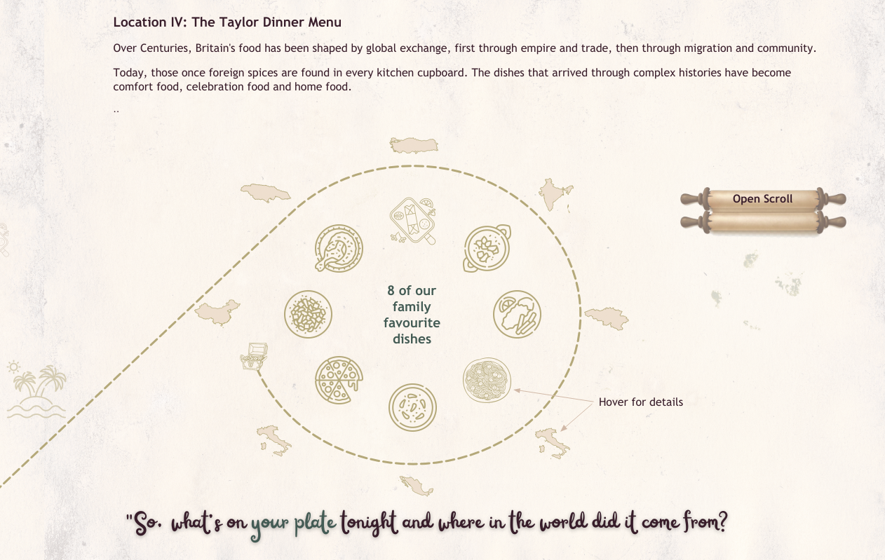

My Iron Viz Journey to Top 10

Firstly, what is Iron Viz?
Iron Viz is the world's largest data visualization competition, held on the keynote stage at Tableau Conference every year. Think Iron Chef, but instead of knives and pans, the weapons of choice are calculated fields, map layers and a dangerously short deadline. Three finalists are selected from a global qualifier competition, open for one month, and evaluated by a panel of Tableau Ambassadors, previous Iron Viz finalists, and data viz experts, scored on Analysis, Design and Storytelling. The stakes are real: first place takes home a $15,000 cash prize, $15,000 to a nonprofit of their choice, and the Iron Viz Champion trophy.
But honestly?
Just making the Top 10 out of hundreds of global entries is a career highlight in itself. Here's how mine went.
What has been my Iron Viz journey?

2024 Theme: Love
Up 'n' Unders, The Harlequins Story is a deep dive into the rugby union club's history that I support. I combined match data with a design that captures the energy of The Stoop on a big matchday. Timelines, creative calcs, and a whole lot of love for a club that plays rugby the way it should be played, with flair.
2024 Scores
Analysis: 3.6
Design: 2.9
Storytelling: 2.8

2025 Theme: Entertainment
The Most Electrifying Man in Entertainment, a tribute to Dwayne "The Rock" Johnson. Because if you're going to viz entertainment, you might as well go big. The viz charts The Rock's extraordinary career arc from WWE superstar to Hollywood's highest-paid actor, combining wrestling statistics, box office data and cultural impact into one dashboard that smells what The Rock is cooking. My second entry having learnt a lot from the year before, I focussed a lot more on telling a good story.
2025 Scores
Analysis: 4.3
Design: 4.5
Storytelling: 4.4

2026 Theme: Food & Drink
From Empire to Identity, an exploration of how food and cultural identity intersect through the lens of the British Empire. How colonialism shaped what we eat, what we call "British cuisine", and what it really means when a nation claims a dish as its own. It's the most ambitious viz I've built, historically rich, visually intricate, and a subject that genuinely surprised me with how deep the data rabbit hole went.
2026 Scores
Analysis: 4.73
Design: 4.39
Storytelling: 4.22
"You can't see the woods for the trees." springs to mind
Where am I now?

After 3 years of entering it was announced I made the Top 10 in 2026. I was so thrilled to see my name on the list as this viz really had been a year in the making. I had put a lot of time and effort into it following my 2025 entry learning from people in the community, practising different techniques and generally trying to push myself to do better, so it was great to see it recognised. I had a lot of fun building it and I learned a lot from the experience. I would definitely recommend entering Iron Viz to anyone who is interested in data viz.
What was in the viz?

Section 1
The welcome and hook for the viz. A map of the British Empire with a focus on the food and drink of the countries it covered.
I wanted to create a visual that was both informative and engaging, so I used a map to show the countries that were
part of the British Empire and then used lines travelling in to the UK.
The user could hover over for more information and also open the interactive scroll to learn about the secret
treasure hunt throughout the viz. This was my way of adding my usual bit of fun to the viz.

Section 2
As I was going for an old fashioned treasure map theme I needed a timeline that was out of the ordinary.
I used my Python and Figma skills to draw oiut a curvy line which I could then convert into points which
would be useable within Tableau. This meant the map line could be interactive and flexible, whilst still giving
the theme I wanted.
The one fatal flaw I had with this is it didn't render on Tableau public like it did on Desktop. So a line that
filled in with colour as the user hovered along it had to be scrapped. Sometimes you have to prioritise functionality
over style. However there was still tonnes of info packed in to here and started to guide the user along the story I
was telling. Starting to focus in on the curry.

Section 3
As we travel further along the map and have hinted towards the curry, the next section focussed on the impact it had within the UK. Having scraped data from the web I was able to plot all the listed resturants and venues selling curry. Using a map again to show hot spots of key cities the user starts to get a feel for where it is popular and how busy those cities are. With the added bonus of a pop out city zoom map, using the amesome dynamic zone visibility function brings this to life.

Section 4
My favourite part of the viz, the spice rack sankey combo. This really allows the user to interact, choose which
spices they have and see what curry's they can make with them. Once the curry is complete the bars change to a
different highlight colour. I used ladataviz's
awesome tools to get the base layer for the Sankey and then added all the bits I wanted to on top with map layers to
really give it that wow factor.
This part really needs to be played with. I hope you enjoy it as much as I did building it.

Section 5
The wrap up bringing the story to a conclusion was built with the intention of adding my own personal experience
to the viz. I wanted to share with the viewer some of our family favourite dishes, all inspired by the imports, and
what this meant to us.
Again I added another fun interactive scroll here, where I hid all the credits and call outs. But the secret part of
the viz is when the user has found all the treasure dishes along the way. They can then click the treasure chest and
reveal their prize.
The Last Thread
Iron Viz is easily one of my favourite times of the year in the #DataFam community, whether that is the qualifiers or the main event. The passion that all the entrants put into it is just amazing. It is a great time to interact with other members, get feedback, learn from them or seek advice. Everyone is always willing to get involved and help. If you have never entered, or feel like you aren't good enough, just do it. It is one of the best ways to learn and improve your skills.
Next year it could be you on that stage!
Rob.